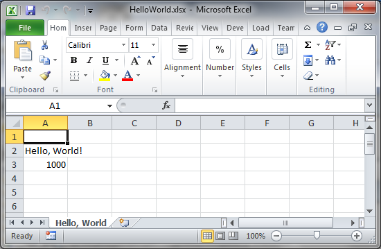

"Hello, World" Spreadsheet
Copy the code below into an Alpha Five Xbasic script and run it.The code assumes that you have a version of Excel that can handle .XLSX files installed. If you have an older version of Excel, change ExcelDocument to Excel2003Document, and .xlsx to .xls. If you don't have Excel or a compatible spreadsheet program installed, remove the line that starts with sys_open.
'create the document (work book) to hold the sheet dim Doc as Office::ExcelDocument 'create the sheet dim Sheet as Office::Spreadsheet 'add the sheet to the document (work book) with a name Sheet=Doc.AddSheet("Hello, World") 'write a string to cell 2A (row 2, column 1) in the sheet Sheet.Write(2,1,"Hello, World!") 'write a number to cell 3A in the sheet Sheet.Write(3,1,1000) 'save the document (work book) with the attached sheet Doc.Save("HelloWorld.xlsx") 'delete all references to the document so that it can be read by Excel delete Doc 'launch Excel or any other registered handler for XLSX files on this work book sys_open("HelloWorld.xlsx")

See Also
Generate Excel Spreadsheets Programmatically V11Office::ExcelDocument
Office::Excel2003Document
Office::SpreadSheet
Office::Format
Office::Font
Office Enumerations
How to perform common spreadsheet operations
Office Example: Simple Weekly sales spreadsheet
Office Example: Multiple spreadsheets
Office Example: Spreadsheet from SQL query
Office Example: Spreadsheet from DBF tables
Office Example: Spreadsheet with picture
Office Example: Update a spreadsheet